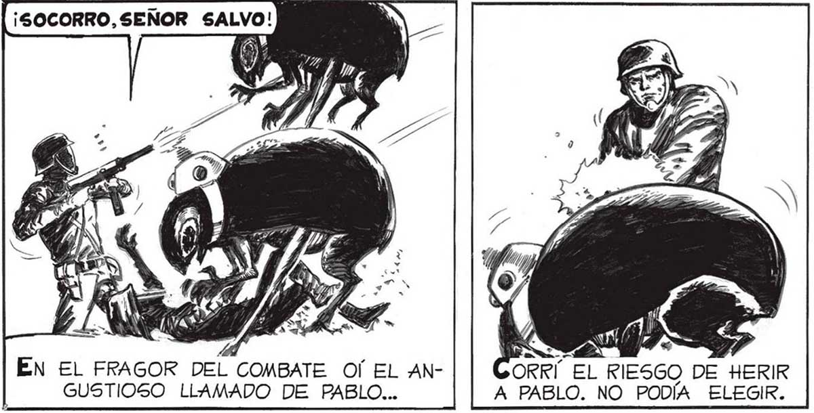
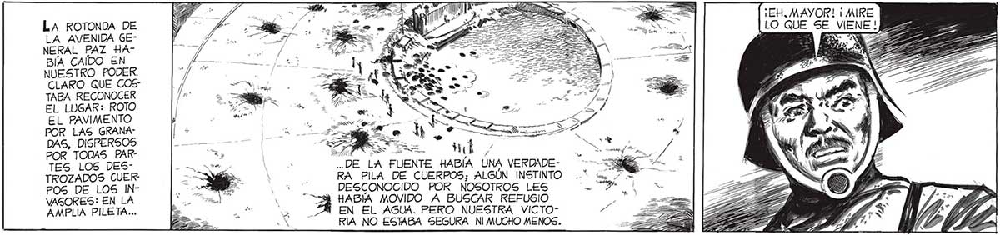

A MS DI a e e AS > : — E == ¡EH, MAYOR! ¡MIRE LA ROTONDA En O IE" MB 2 7 A. [LO QUE SE VIENE 22 LA AVENI y 4 fa y EE iS - 3 SE o : > e A E A 2 NERAL PAZ HABÍA CAIDO EN NUESTRO PODER. CLARO QUE COS TABA RECONOCER EL LUGAR: ROTO EL PAVIMENTO POR LAS GRANADAS, DISPERSOS | TES EOS DES: ES DE LA FUENTE HABÍA UNA VERDADETROZADOS CUER -— RA PILA DE CUERPOS; ALGÚN INSTINTO POS DE LOS IN- caricia ¿E DESCONOCIDO POR NOSOTROS LES VASORES: EN LA e 3 HABÍA MOVIDO A BUSCAR REFUGIO AMPLIA PILETA... E oo uy ZA EN EL AGUA. PERO NUESTRA VICTOPS ' RÍA NO ESTABA SEGURA NI MUCHO MENOS. ¡UN CONTRA: ¡5 ¡SE VIENEN ¡FUEGO! ¡QUE NO ATAQUE | A LA CARRERA! SE ACERQUEN! e os A VELOCIDAD INCREÍBLE, GRAN CANTIDAD DE AQUELLOS INVASORES QUE TANTO RECORDABAN A INSECTOS, SE NOS VINIERON ENCIMA. E $9 ) 2 = BES UCHOS CAYERON. PERO OTROS MINA REN LA CARRERA CON SALTOS PODEROSOS... SE EQUIVOCA, CABO AMAYA... ESTE, ATAQUE FUE SOLO UNA DIVERSIÓN PARA TENERNOS OCUPADOS..¡MIREN A ' EN EL FRAGOR DEL COMBATE Of EL AN- ORRÍ EL RIESGO DE HERIR GUSTIOSO LLAMADO DE PABLO... A PABLO. NO PODÍA ELEGIR. 97

